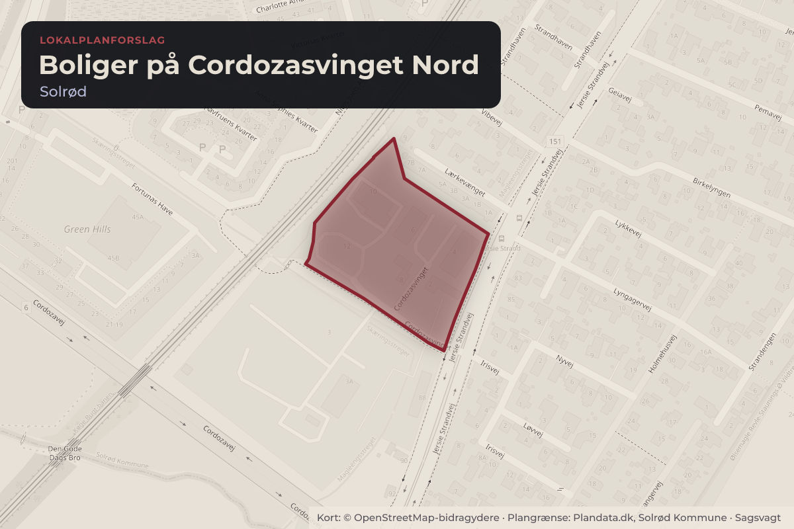

På dagsordenen 2. december, Natur-, trafik- og planudvalget, Solrød
Orientering om status på ny lokalplan for boliger på Cordozasvinget Nord

Kort: © OpenStreetMap-bidragydere. Plangrænse: Plandata.dk, Solrød Kommune.
Kort fortalt
- Hvem
- Natur-, trafik- og planudvalget, Solrød Kommune
- Hvornår
- Onsdag 2. december 2026
- Status
- På dagsordenen. Sagen behandles på mødet.
- Næste skridt
- Lokalplanarbejdet sættes midlertidigt i bero, mens administrationen indleder miljøsagen og får afklaret grundlaget for den videre planlægning. Administrationen forventer fortsat, at planlægningen for boliger på Cordozasvinget Nord kan fremmes.
Er noget forkert her? Skriv til os
Hvad kan du gøre?
- Skriv til politikerne
- Udvalgets møder er lukkede, men du kan skrive til medlemmerne før mødet onsdag 2. december 2026. Du finder dem på solrod.dk.
Læs hele sagen Kommunens egen tekst
Indstilling
Administrationen indstiller, at orienteringen tages til efterretning.
Sagsfremstilling
Arbejdet med den nye lokalplan for boliger på Cordozasvinget Nord har været i gang siden april 2025. I
september 2025 besluttede administrationen, at der var behov for en miljøvurdering af planen, og i
forbindelse med dette arbejde er der foretaget foreløbige beregninger af eksisterende støj fra
virksomhederne syd for planområdet (se bilag 1). Der er dog opstået en usikkerhed om støjbidraget fra
de to virksomheder syd for området, der betyder, at administrationen nu midlertidigt sætter
lokalplanarbejdet i bero og indleder en miljøsag. Administrationen forventer fortsat at kunne fremme
planlægningen for boliger, men den videre proces afhænger af afklaringen af støjforholdene.
Status på lokalplanarbejdet
Den nye lokalplan skal give mulighed for at omdanne Cordozasvinget Nord fra erhverv til et boligområde
med 141 boliger. Lokalplanområdet fremgår af bilag 1. Som led i planarbejdet har administrationen
undersøgt støjpåvirkningen fra tilstødende erhvervsområde mod syd, der rummer en brændevirksomhed
og en virksomhed med handel med campingvogne.
Administrationen har indhentet oplysninger om virksomhedernes drift, gennemført trafiktællinger og
foretaget en besigtigelse. NIRAS har udarbejdet foreløbige støjberegninger på baggrund af
trafiktællingerne og virksomhedernes oplysninger.
Behov for en miljømæssig afklaring
De foreløbige støjberegninger viser, med de anvendte forudsætninger, overskridelser af Miljøstyrelsens
vejledende grænseværdier ved eksisterende boligområder i nærheden af planområdet. Administrationen
er derfor nu nødsaget til at indlede en miljøsag for at afklare virksomhedernes faktiske støjpåvirkning og
behovet for eventuel regulering.
Miljøsagen vedrører støjpåvirkningen af de eksisterende boliger og skal behandles på et selvstændigt
grundlag. Virksomhederne inddrages i afklaringen, og eventuelle krav fastlægges på baggrund af sagens
oplysninger og den nødvendige høring. De foreløbige beregninger er således ikke i sig selv en endelig
konstatering af virksomhedernes faktiske støjbelastning.
Afklaringen skal samtidig bidrage til et tilstrækkeligt sikkert grundlag for at vurdere mulighederne for nye
boliger på Cordozasvinget Nord.
Videre proces
Lokalplanarbejdet sættes midlertidigt i bero, mens administrationen indleder miljøsagen og får afklaret
grundlaget for den videre planlægning.
Administrationen forventer fortsat, at planlægningen for boliger på Cordozasvinget Nord kan fremmes.
Det afhænger dog af afklaringen af støjforholdene. Administrationen vil løbende vurdere, hvornår
lokalplanarbejdet kan genoptages, og hvilke dele der kan fremmes sideløbende med miljøsagen.
Der kan på nuværende tidspunkt ikke fastlægges en sikker tidsplan for lokalplanens færdiggørelse.
Lovgrundlag
Efter planlovens § 15 a, stk. 1 må kommunen som udgangspunkt kun planlægge for nye boliger i et
støjbelastet område, hvis lokalplanen kan sikre boligerne mod støjgener, f.eks. gennem støjafskærmning
eller andre støjreducerende foranstaltninger. Derfor er det nødvendigt at få afklaret støjforholdene fra de
nærliggende virksomheder, før administrationen kan vurdere, hvordan planlægningen for boliger på
Cordozasvinget Nord kan fortsætte.
Kommunen har desuden efter miljøbeskyttelseslovens § 65 ansvar for at føre tilsyn med
virksomhedernes overholdelse af miljølovgivningen. Den miljøsag, som administrationen nu indleder, skal
afklare virksomhedernes faktiske støjpåvirkning af de eksisterende boliger, og om der er grundlag for at
stille krav til virksomhederne.
Høring og inddragelse
Sagen har ingen høringspligt.
De to virksomheder har været inddraget i afdækningen af støjforholdene. Den videre inddragelse og
nødvendige partshøring sker som led i miljøsagen. Offentlig høring af et kommende lokalplanforslag
gennemføres som led i planprocessen.
Finansiering
Sagen har ingen bevillingsmæssige konsekvenser.
Kompetence til afgørelse
Natur-, trafik- og planudvalget.
Kilde: Solrød Kommune, Natur-, trafik- og planudvalget, dagsorden fra mødet onsdag 2. december 2026, punkt 9. Læs den originale sag hos kommunen.